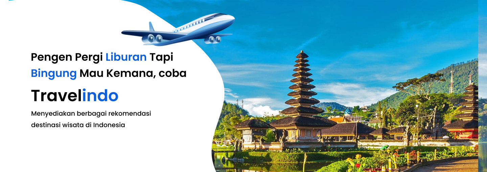

Yogyakarta, atau di sebut dengan kota wisata memang menyimpan banyak tempat wisata yang indah terutama wisata alam. Banyak masyarakat lokal maupun turis mancanegara yang menjadikan Yogyakarta tempat pilihan untuk liburan. Berikut 5 rekomendasi pantai yang indah nan cantik yang ada di Yogyakarta yang wajib dikunjungi saat liburan.
Pantai Drini merupakan pantai yang terletak di Desa Banjarejo, Kecamatan Tanjungsari, Kabupaten Gunung Kidul,
tempatnya tak terlalu jauh dari Pantai Baron. Untuk sampai ke sini, memerlukan waktu kurang lebih 2 hingga 3 jam dari Kota Yogyakarya.
Jadi anda bisa menyesuaikan waktunya bila ingin tiba lebih pagi atau sore. Akses jalannya yang mudah membuat wisatawan yang berkunjung pun tak terlalu kerepotan.
Untuk tiket masuk, anda hanya perlu mambayar Rp10.000 saja per orang
untuk bisa menikmati pemandangan di Pulau Drini sebebasnya. Parkir kendaraan bermotor dipatok dengan harga Rp2.000 sedangkan mobil Rp5.000.
Daya tarik pantai Drini yaitu ada pula Pulau kecil yang berada tak jauh dari tepi Pantai Drini.
Untuk mencapai pulau ini, anda bisa menjangkaunya dengan menyebrangi jembatan yang telah disediakan. Namun anda perlu membayar Rp6.000 lagi
untuk pulau ini. Di Pantai Drini anda juga bisa mendapatkan pengalaman itu lho. Dengan membayar Rp50.000, anda bisa bermain kano sepuasnya dengan tambahan 2 buah pelampung. Jika masih tak puas dengan pemandangan Pantai Drini, anda juga bisa naik ke puncak bukit yang ada di sekitaran kawasan Pantai.
Untuk naik ke bukit ini, anda perlu membayar Rp3.000. Dari atas bukit, pemandangan Pantai Drini akan tampak lebih jelas.
Parangtritis adalah pantai yang terletak di selatan Yogyakarta, tepatnya 25 km dari Yogyakarta.
Pasir ini dipenuhi pasir vulkanik hitam yang berkilauan di bawah sinar matahari. Apa yang membuat Parangtritis terlihat indah adalah karena pantai ini bukan
hanya merupakan tempatlibur yang mempesona, tetapi juga merupakan tempat suci/ keramat. Menurut legenda, ketika Anda berkunjung ke sini, ini berarti Anda juga sedang memasuki kediaman Kanjeng Ratu Kidul, Ratu dari Pantai Selatan yang dikenal dengan pakaiannya yang berwarna hijau.
Untuk alasan ini Anda dilarang memakai pakaian berwarna hijau ketika berada di kawasan pantai ini karena Ratu Pantai Selatan akan murka.
Untuk tiket masuk, anda hanya perlu mambayar Rp10.000 saja per orang
Menariknya di Pantai Parangtritis pengunjung bisa menyewa ATV buat berkeliling sekitar tepian pantai. Tersedia penyewaan baik jenis ATV kecil atau besar yang bisa disesuaikan dengan budget dan kebutuhanmu.Di sini juga sudah tersedia toilet umum, tempat ibadah, hingga gasebo buat istirahat.
Buat yang pengin cari oleh-oleh atau menginap, di sini juga sudah banyak tempat penginapan dan toko oleh-oleh.
Kalau cuaca sedang cerah, anda bisa menikmati keindahan sunset berwarna jingga hingga merah muda di sisi barat.
Menikmati sunset sambil duduk santai di tepi pantai atau naik kuda di sepanjang bibir pantai pasti cocok sekali buat healing.
Selain di tepi pantai juga bisa melihat sunset dari tebing Bukit Paralayang Watupingit yang tak jauh dari pintu masuk pantai.
Pantai Wediombo adalah salah satu tempat wisata sekaligus kawasan konservasi perairan yang dilindungi di Yogyakarta. Pantai berbentuk teluk ini dikelilingi bukit karang dengan hamparan pasir putih yang luas.
Pantai Wediombo berada di Desa Balong, Girisubo, Gunungkidul, Yogyakarta. Apabila berangkat dari Kota Yogyakarta, jaraknya sekitar 70 km dengan waktu tempuh sekitar 2 jam perjalanan.
Pengunjung dikenakan biaya tiket masuk ke Pantai Wediombo sebesar Rp5 ribu per orang.
Harga ini di luar biaya tarif parkir sebesar Rp5 ribu untuk kendaraan roda empat dan Rp2 ribu untuk kendaraan roda dua.
Daya tarik utama Pantai Wediombo yaitu kolam alami yang terbentuk dari batu-batu karang dengan kedalaman sekitar 1,5 meter.
Di area Pantai Wediombo terdapat sebuah tebing karang yang posisinya agak menjorok ke arah laut.
Posisi tersebut menjadi spot menarik untuk melihat sunset di Pantai Wediombo jadi semakin indah.